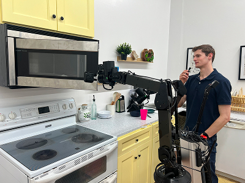
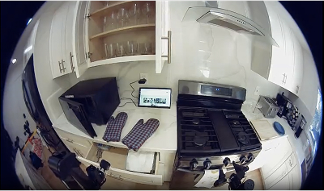
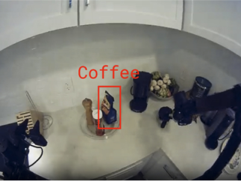
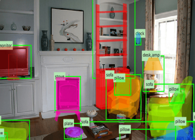

2025 · PHYSICAL INTELLIGENCE
π0.5 精读
1. 问题：换一个家庭，原来会的技能还能用吗？
π0.5重点研究训练中未见家庭里的长程操作：任务需要的不仅是抓取动作，还包括识别物体用途、理解场景和选择下一子任务。这里的“开放世界泛化”有具体实验定义，不能直接翻译成任意陌生环境、任意新技能都能零样本成功。数据多样性、训练目标与高层决策共同构成方法，而不只是“把π0训练得更久”。
2. 方法精读：异构数据与混合动作表示
2.1 不是每条样本都有完整动作标签
配方连接跨机器人动作数据、不同环境的机器人数据、高层语义任务以及网络视觉语言任务。不同样本可监督不同输出：描述、检测/指代、语义子任务或低层动作。没有机器人动作标签的web样本，不等于补一个零动作当监督；需要在共同序列接口里明确每种样本的目标与loss mask。


来源：π0.5 官方博客 · © Physical Intelligence


来源：π0.5 官方博客 · © Physical Intelligence
2.2 FAST离散训练与连续动作专家
原论文的重要设计是结合FAST动作token预测与flow matching动作专家。离散训练便于沿用token预测配方，连续专家用于较快地产生动作块；两种动作表示通过attention mask隔离，避免真值token向带噪动作分支泄漏。抽象地可写 $L=L_{\rm CE}+\alpha L_{\rm FM}$，但不能据此假定每个阶段、每种样本都同时计算两项。
论文IV节的分阶段方案先进行离散token预训练，再加入连续动作专家做后训练；具体公开checkpoint可能使用更新过的配方，复现应固定版本。把π0.5只概括为“π0加web数据”会漏掉训练效率与动作表示这部分贡献。
2.3 高层先选择子任务，低层再执行动作
同一模型可先预测语义子任务 $\hat\ell_t$，再生成 $p(A_t\mid o_t,\ell,\hat\ell_t)$。例如总任务是清理厨房，当前子任务可能是拿起盘子。高层不是必须独立部署的另一个大模型，也不是先生成一串语言就自动获得长程规划保证；子任务更新频率、低层执行窗口和失败恢复仍需要设计。
来源：π0.5 官方博客 · © Physical Intelligence · 原始文件
点击播放，可暂停、拖动进度或全屏；本站不自动播放，也不额外加速。
3. 结果与消融
对照论文V节分别看新家庭任务进度、训练地点规模、各类共训数据消融与高层推理消融。地点更多与表现提高的曲线，不证明仅靠地点数量即可泛化；去掉web数据、跨本体数据或高层监督的效果也依任务而变。长程任务常用部分进度评分，其平均分不能直接写成整任务成功率。
4. 训练与实现：最先核对的接口
- 动作归一化：固定采用均值方差还是分位数、统计对应哪份数据；padding维与有效mask必须一致。
- 多模态监督：记录FAST目标、高层子任务和连续专家分别在哪些样本/阶段启用，避免标签与attention泄漏。
- 部署协议：写清高层是否自动产生、是否有人提供子任务、如何重新观测和判定失败。
5. 研究者注记
可研究的不是抽象的“更多数据”，而是迁移路径：哪类辅助任务改善哪种泛化？语义子任务带来的是语言理解、阶段切换还是更好的数据划分？用固定机器人数据和训练预算的消融拆开回答。相机视角、动作语义与监督模板都是接口条件，不应默认为跨数据集天然一致。
6. 高层与低层：把长程任务分解成可学习条件
用 $\ell$ 表示总指令，$\hat\ell_t$ 表示当前语义子任务，可以把联合分布写为 $p(A_t,\hat\ell_t\mid O_t,\ell)=p(\hat\ell_t\mid O_t,\ell)\,p(A_t\mid O_t,\ell,\hat\ell_t)$。这是条件概率的分解：高层决定当前要达成什么局部目标，低层决定对应的动作块；不表示高层已经穷举或验证所有未来步骤。
教学例子： “把桌上的餐具收好”可在当前观察下转成“拿起左侧盘子”，下一轮再转成“把盘子放进沥水架”。若第一次没有抓到盘子，下一步不能仅按预定脚本继续放置；需要用新观察更新子任务或恢复行为。具体何时触发更新，应由部署协议明确，而不是凭语言序列长度决定。
这也解释了为什么高层子任务监督有价值：完整任务标签过于粗，难以区分同一厨房场景中当前到底在抓、擦还是放。局部标签让相近视觉状态与不同动作意图建立联系；同时，错误或不一致的子任务标注会把歧义直接带进条件。
7. FAST为什么帮助训练，却不强迫部署逐token解码？
FAST不是把每个时刻、每个关节独立分桶后原样拉成很长的序列。它利用动作在时间上的相关性：对归一化后的每个动作维做时间方向的DCT，将系数量化，再用BPE压缩成token序列。训练模型预测的是这份离散编码；解码需要把token还原为系数，再逆变换到动作窗口。方法出处为 FAST作者说明。
教学例子：相关性来自时间，不是少一个关节
假设某个关节的四个目标都是 $[0.2,0.2,0.2,0.2]$。在常见正交DCT约定下，它只需要非零直流系数就能精确表达，其余频率为0；变化缓慢的轨迹通常也把较多能量集中到少数低频系数。实际压缩率还依赖量化精度、序列长度和BPE词表，不能把这个常量序列的极端例子当成所有接触动作都能无损高压缩。
π0.5把这种离散监督用于高效预训练，再引入连续动作专家进行后训练/部署。共享的是条件表示与任务知识，不是规定每次真机动作都要先生成FAST token、再用flow“润色”。纯FAST解码与连续专家采样是应分别说明的推理路径，具体选用哪一路由checkpoint与服务接口确定。
离散监督的交叉熵可以写成 $L_{\rm CE}=-\sum_j\log p_\theta(y_j\mid y_{<j},O_t)$。teacher forcing在训练中使用已有的前缀目标token，部署时则没有尚未生成的真值token。若比较速度，区分并行训练吞吐和自回归推理时延，不能拿前者替代后者。
8. 异构共训：三种mask，四类样本
一种教学写法是 $L_i=m_i^{\rm tok}L_i^{\rm CE}+\alpha m_i^{\rm act}L_i^{\rm FM}$。这里用两个二值符号概括该样本是否具有对应监督；真实实现还要细分token级/动作维级mask，并服从当前训练阶段。“没有目标”应当不计算那部分loss，不能随手补0并当作正确标签。
| 样本类型 | 可提供的token目标 | 是否有连续动作目标 | 主要连接 |
|---|---|---|---|
| 机器人操作片段 | 子任务和/或FAST动作 | 若数据及阶段支持则有 | 语义与运动 |
| 高层语义样本 | 下一子任务 | 不必有 | 视觉状态与阶段决策 |
| 检测 / 指代样本 | 对象、位置等离散目标 | 通常无 | 语言与视觉定位 |
| 网络视觉语言样本 | 描述或问答等 | 无 | 通用语义知识 |
表格是监督关系示意，不是作者数据加载器的完整枚举。Padding mask阻止读取填充位置；attention mask规定token之间能否互看；loss mask规定哪些输出计入监督。即使把真值FAST位置的loss关掉，如果带噪动作分支仍能读到这些未来真值，泄漏依然存在。
因此检查训练样本时，既打印输入/目标，又可视化一小批attention矩阵；再用一个没有动作标签的web样本，确认动作loss确实不产生伪监督。原配方与表示隔离见 π0.5 IV节；后来的KI是另一篇方法，不应回写成原论文所有配置都已使用同一梯度隔离方案。
9. 从训练阶段到新家庭评测
- 预训练： 用机器人和非机器人数据学习token预测，包括语言、空间任务与FAST动作监督；记录数据配比和每类目标是否有效。
- 后训练： 加入连续动作专家，按该阶段目标训练；区分训练主干、专家与辅助token目标的具体设置。
- 高层推理： 读取当前场景和总指令，产生当前语义子任务；评测时注明这是模型输出还是人为给定。
- 低层执行： 以观测、总指令和子任务生成动作块，按执行窗口反馈更新。高层/低层更新可以不同频，不能把一次高层预测视为整段开环动作。
教学算例：任务进度不是整任务成功率
未见家庭测试至少要列出：哪些家庭完全未参与训练、物体/家具与训练的重叠、是否给高层子任务、是否用过该场景采集额外微调数据，以及失败后是否允许复位重试。少一项，就可能把“场景迁移”与“交互式适配”混在一起。
10. 研究建议：先追踪知识从哪里迁移
| 假设 | 对照设计 | 容易混入的因素 |
|---|---|---|
| web数据改善新物体语义 | 固定机器人数据和总预算，替换/去除特定web目标 | 训练步数、视觉增强或数据总量同时改变 |
| 高层监督改善阶段切换 | 自动子任务 / 人工正确子任务 / 无子任务分别评测 | 人为条件把原本的高层错误隐藏了 |
| 离散预训练改善效率 | 以总训练计算和墙钟时间对齐，而非只按step | 序列长度、批量、专家是否参与前向不同 |
| 跨本体数据改善新家庭 | 固定目标本体数据，控制辅助数据来源与比例 | 新数据可能同时引入更多场景和物体 |
最有价值的结果不是“共训有效”，而是找到可解释的迁移通道：哪一种辅助监督，改善哪一种错误，在什么数据与预算条件下仍成立。看盘子演示时，把对象识别、当前子任务选择和连续接触动作分别记下来，后续实验才能逐项归因。
11. FAST的DCT展开：压缩的是时间相关性，不是动作语义
对单个动作维，取长度 $N$ 的归一化时间序列 $a_0,\ldots,a_{N-1}$。常见正交DCT-II可写为 $c_k=b_k\sum_{j=0}^{N-1}a_j\cos[\pi(j+1/2)k/N]$，其中 $b_0=1/\sqrt N$、其余 $b_k=\sqrt{2/N}$。这里 $k$ 是频率索引，不是扩散噪声步，也不是关节编号；对不同动作维分别变换后再组织系数。
当轨迹平滑时，低频系数可能携带较多信息；但接触、夹爪切换和快速纠偏仍可能需要高频部分。DCT提供一种可逆基变换，本身没有学会“哪一种接触动作重要”。真正的信息损失来自后续量化、裁剪或人为丢弃系数，不能把BPE压缩本身与轨迹平滑混为一谈。
量化误差可以怎样界定？
若所有系数独立按步长 $\Delta$ 四舍五入、不裁剪且保留全部系数，每个系数误差绝对值不超过 $\Delta/2$。正交变换保持平方范数，因而每个时间点的平均平方重建误差上界为 $\Delta^2/4$。这是该理想设定的代数界，不涵盖饱和裁剪、系数删减或错误解码，更不等于物理任务误差的上界。
FAST的具体流水线应对照 作者原始说明。在复现中保存DCT约定、量化尺度、动作归一化和词表版本；这些都是token语义的一部分，只保存一个整数序列不足以恢复正确动作。
12. BPE之后一个token对应什么：词表、EOS与重建契约
量化后的系数序列会出现可压缩的重复结构，BPE通过合并常见符号片段来缩短表示。它在既定符号序列上的合并可逆，不能凭空恢复量化前丢失的精度；也不意味着一个token始终等于一个关节或一个控制时刻。相同token长度的两个样本，未必覆盖相同的动作复杂度。
因此离散动作模型的推理时延不只由预测视界决定，还与实际输出token长度、词表与解码策略有关。若比较逐维分桶与FAST，应同时看重建误差、平均/尾部token长度和模型解码耗时，而不是把“更少token”直接当成更高闭环成功率。
解码失败也属于方法接口
- 确认token序列属于正确词表，并且使用同一量化与系数排列规则；不能跨词表只按整数ID复用。
- 明确结束标记、最大长度以及不完整系数序列的处理；不能把截断输出无声当作有效动作。
- 还原系数、逆变换和反归一化后，检查动作块长度、有效维与数值范围。
- 对异常输出采用事先规定的系统回退，不把任意补零当成“安全动作”。
以上是研究复现需要建立的契约，不是在宣称每个官方tokenizer都采用同一种EOS或补齐实现。应直接检查所用处理器版本，尤其不要把另一份动作tokenizer的padding规则搬来。
π0.5采用离散表示帮助训练、连续专家帮助快速动作生成；这不要求部署时每次先完整解码FAST再生成flow。研究纯离散路径时，单独记录它的输出合法性和串行解码成本；研究混合训练时，关注离散监督怎样影响共享表示。
13. 多目标损失的账本：样本权重、token数与有效元素
写出 $L=L_{\rm CE}+\alpha L_{\rm FM}$ 还不够。两项是先按样本平均，还是把整个batch的有效元素合并平均？动作loss是否按动作维、时间和噪声时间加权？这些选择都会改变目标的相对尺度，即使屏幕上显示同一个 $\alpha$ 也可能对应不同梯度。
教学设一个机器人样本有20个有效目标token，一个web样本有100个。如果把120个token一起等权平均，web贡献了约83.3%的监督位置；若先各自按长度平均、再按样本平均，两个样本的外层权重都是50%。这只是监督项计数，不表示真实梯度范数也按83.3%分配。
| 开关 | 控制什么 | 不控制什么 |
|---|---|---|
| 数据抽样概率 | 哪类样本被抽到多频繁 | 单个样本内部token长度 |
| 目标有效mask | 哪些位置具有真实监督 | 这些位置能读取哪些输入 |
| 损失归一化 | 有效元素如何构成平均 | 训练阶段是否启用专家 |
| 阶段系数 $\alpha$ | 离散/连续目标的外层取舍 | 自动阻断某条主干梯度 |
预训练阶段若只用离散目标，连续分支不参与的含义应落实到计算图与优化器；后训练加入专家后，还要保存新的参数组和状态。不要只把配置数字改成非零，就假定新参数已经被正确初始化、加入优化器并接收了目标。
实际研究应报告各目标有效样本数、token/动作元素数、归一化规则和分项loss。不同训练阶段的总loss没有天然可比性，不能把一个阶段数值更低解释为模型更好。
14. 原论文的数据配方：MM、ME、CE、HL、WD与VI
π0.5 IV节与Fig. 4 区分移动操作数据MM、多环境非移动机器人数据ME、实验室跨本体数据CE、高层语义HL与网络多模态WD；后训练还使用口头指令VI，并调整数据组成。缩写代表的是数据来源/监督角色，不是六个互不影响的网络模块。
来源：π0.5 官方博客 · © Physical Intelligence。沿用原文件，未重绘。
增加ME可能同时增加场景、相机、物体和行为多样性；增加CE可能同时改变本体和任务。因而“去掉一类数据”的消融回答的是该配方中这类混合来源的净作用，不会自动把物体知识、视觉鲁棒性与控制经验完全分离。
配比为什么不能只报数据集大小？
一个有1000个episode的来源，若按高权重重复采样，可能占据大部分训练更新；另一个更大的来源也可能只占小比例。还要区分按episode、帧、窗口还是token抽样，以及同一长episode切出的相邻窗口是否被过度重复。数据“拥有多少”与模型“实际看到多少”不同。
建议保存每个来源的版本、许可/来源说明、有效任务标签、输入字段、抽样权重和实际被采样次数。若预算固定，加入新来源意味着要减少旧来源暴露或增加总计算，这两种实验应分开。
看原论文数据消融时，也应按具体测试类型阅读：某来源在长程任务总进度上作用有限，不意味着它对未见对象语言跟随没有价值。一个总平均数不能替代迁移通道分析。
15. 高层标签的时间边界：子任务名称对了，切分也可能错
把长演示切成“拿起盘子、擦干盘子、放进架子”，需要明确每个标签从何时开始、何时结束。若“放进架子”的标签提前覆盖到仍在抓取的片段，同一条件下会出现相互冲突的动作；若标签一直滞后，模型可能学到依赖过去步骤名称而非当前意图的策略。
这里的未来目标与未来观察要区分：训练时用后续行为确定一个子任务标签，属于监督；把测试时不可得的未来相机帧混进当前观察输入，则是另一个问题。不能把所有利用未来结果生成标签的训练都叫泄漏，也不能因为标签合理就忽略输入字段里实际出现的未来信息。
一个可检查的标注契约
- 定义子任务是当前意图、当前动作阶段还是下一阶段，避免不同标注者各用一套时间含义。
- 记录边界、模糊区间与复合动作；相同标签是否跨越多种不同策略，要在模板中说明。
- 保存总任务与局部标签的对应关系，不让局部指令悄悄改变最终目标。
- 对一组轨迹由不同标注者复核，关注边界分歧，而不只统计名称是否一致。
部署时还要处理子任务切换：定时更新、依据观察更新或由其他判据触发，各有不同反馈特性。若每次短前缀后都重新生成高层，可能出现反复改主意；若很久不更新，失败后又可能机械地继续原步骤。这个频率应作为系统变量，而不是只写“模型能做高层推理”。
研究标签质量时，可固定低层数据，分别扰动标签名称与边界位置，看看哪类错误更影响闭环。它比笼统地比较“有高层/无高层”更能定位语义监督的作用。
16. 语言跟随怎么测：对象、关系、同义与否定要分层
模型看见一张桌面图后拿对了常见物体，不足以证明它使用了当前语言：如果训练中同一场景总是要求同一个物体，视觉背景就可能替代指令。一个基本对照是在尽量相同的场景里改变任务语言，并检验动作目标是否随之改变。
| 测试层 | 控制条件 | 应单独记录 |
|---|---|---|
| 同义改写 | 保持对象与目标相同，只改变表述 | 任务是否一致，不能只比较字符串 |
| 对象指代 | 同场景中有多个候选对象 | 选错对象与抓取失败分开 |
| 空间关系 | 让左右/远近等关系真正改变目标 | 相机坐标与机器人坐标的语义约定 |
| 否定/约束 | 明确任务本身可解且指令无歧义 | 是否遵循约束，而非只完成主动作 |
这些是研究测试维度，不是在声明π0.5已解决所有语言现象。特别是复杂否定、组合约束和不明确指代，应先确认数据与模型支持范围；不要仅从预训练VLM具有语言能力推断真机策略具备同等级约束执行能力。
在有高层子任务的系统里，还要区分高层选错与低层执行错。可以用人工正确子任务做诊断上界，但那不是自主成绩；若只有人工条件下表现好，结论是低层在特定条件下可执行，而不是整系统已解决语言规划。
建议同时保存指令原文、规范化任务标签、候选物体布局、自动高层输出和最终动作结果。只汇报一个语言跟随总分，会丢掉决定后续研究方向的错误结构。
17. 长程成功为什么脆弱：阶段误差、恢复与评价函数
教学设每个阶段独立以95%的概率成功、共10个必须完成的阶段，则整任务成功概率是 $0.95^{10}\approx59.9\%$。现实阶段通常不独立，前一步状态会影响后一步；这个乘法仅说明小的局部失败率可能在长序列中累积，不能拿来预测论文的实际成绩。
高层选择合理子任务，可以减少阶段决策错误，但不会自动修复抓取不稳、接触偏差和观察延迟。相反，一个错误子任务可能让原本强的低层执行错误目标。因此长程可靠性必须同时分析高层选择、阶段完成判断与低层动作。
恢复行为在数据里长什么样？
只包含一条顺利完成的主路径，可能缺少掉落后重抓、工具未拿到时重新选择、或错误放置后的状态。恢复数据应描述失败后的真实观察和有效动作，而不是只在原成功轨迹中插入一句“重试”。若辅助数据由人提供，还应记录人工复位与接管成本。
评价函数也决定模型看起来“长程”到什么程度。等权里程碑进度、重要步骤加权得分、全任务成功和完成用时回答不同问题；某个模型能稳定完成前半段，可能在平均进度上很好，却从不达到最终状态。
研究建议按阶段建立转移账本：每个阶段被选择多少次、进入时状态是否正确、局部完成率、失败后是否恢复、最终是否成功。这样可以区分“一个瓶颈阶段拖累全程”与“每个阶段都稍弱”，对应的改进方向完全不同。
18. 新家庭划分的细粒度设计：环境未见不代表一切未见
“新家庭”可能同时包含已见与未见物体、熟悉与陌生家具布局、相似与不同相机条件。应为每个测试episode列出这些轴，而不是把一个地点ID当成完整泛化定义。来自同一住所不同角度的采集，也可能共享强烈的背景和对象信息。
更细的划分可以分为：新地点但熟悉对象、新对象类别但熟悉任务、新对象—任务组合，以及不同本体上的相关场景。每一类回答的迁移问题不同；仅随机留出若干演示窗口，通常不足以支持这些结论。
| 数据层级 | 应保存的划分键 | 潜在近重复 |
|---|---|---|
| 采集来源 | 住所/房间、日期、操作者、设备 | 同一session相邻片段 |
| 对象与任务 | 实例、类别、目标关系、子任务 | 只是换一句话的同一示范 |
| 观察条件 | 相机位置、标定、光照、遮挡 | 背景几乎相同但被记成不同场景 |
| 适配过程 | 是否收集过测试地点反馈/微调数据 | 后续适配混入最初零样本成绩 |
如果允许在新家庭中进行语言指导、重新拍目标图或收集少量演示，那也是有价值的交互式适配设置，只需与直接迁移分开。关键不是给实验套一个更强的名字，而是让别人知道部署时实际获得了什么额外信息。
研究报告中可以附一份测试来源清单与训练重叠审计。出现意外高分时，先检查对象、布局与采集session的重叠，再讨论是否获得了新的组合泛化能力。
19. 原论文与公开实现对照：pi05开关改变了哪些接口
论文版本、训练配方、公开checkpoint与服务代码不必完全同一时间发布。阅读公开实现时，先固定提交与checkpoint，再判断它复现了论文中的哪一部分；不能用后续代码的一个分支反推原论文每个实验都采用相同设置。
在 本笔记固定的openpi Pi0类 中，pi05 开关会改变状态与生成时间的接入方式：非pi05分支在动作专家侧加入状态投影，并把动作/时间特征经MLP混合；pi05分支使用时间MLP与adaRMS路径，而且不走同一状态投影调用。看到专家侧没有状态token，不等于系统丢弃了本体状态，还应追踪外部tokenizer与transform。
| 核对对象 | 具体看什么 | 不要直接等同 |
|---|---|---|
| 原论文配方 | 离散预训练、连续专家后训练、异构来源与mask | 任意后续checkpoint的完整训练记录 |
| 模型代码 | 分支、时间条件、状态路径与权重shape | 上游数据预处理全部语义 |
| transforms | prompt/state处理、归一化与delta动作 | 底层执行器的真实控制约定 |
| 部署服务 | 采样步数、输入schema、执行前缀与调度 | 论文图中所有系统能力 |
复现文档最好有一张从原始数据字段到模型输入、再到最终动作的映射。每个跨越库边界的地方都标明单位、mask与归一化。改模型之前先保证这条路径可以对真实示范做往返还原，常能省去大量无效训练。
20. 可复现课题：共训改善的是语义、阶段选择还是动作表示
研究假设： 某类辅助监督可能主要帮助未见对象识别，而另一类主要帮助阶段选择；总任务成功率上的相近收益，不意味着它们沿同一通道迁移。研究应将错误分层，而不只比较“加/不加共训”。
| 实验轴 | 可控设置 |
|---|---|
| 数据来源 | 固定机器人数据，选择一种辅助来源做有/无对照，匹配总训练预算 |
| 高层条件 | 自动高层与人工正确子任务分别记录；后者只作诊断 |
| 对象划分 | 熟悉类别、未见实例与未见类别分开，避免混成一个OOD标签 |
| 生成接口 | 固定连续专家与执行协议；若研究FAST，再单独测token重建与解码 |
| 主要指标 | 对象选择、阶段切换、动作完成、整任务进度、计算与人工成本 |
还可记录共享参数上不同目标的梯度余弦 $g_1^\top g_2/(\|g_1\|\|g_2\|)$，帮助寻找训练阶段的冲突；零梯度时该量无定义，额外计算也应计入研究开销。正余弦不证明有益迁移，负余弦也不自动证明性能受损，必须与任务分层结果相对照。
若只在人工高层下提升，证据更接近低层条件执行改善；若自动高层差距显著缩小，才支持阶段决策也得到帮助。若收益只出现在训练相近对象，应该收窄泛化结论，而不是改用更宽泛的描述。
最终交付应包括配比与有效监督账本、明确留出的对象/场景、分层错误和固定版本代码。这里给出的是待验证课题，不是新的π0.5性能结论。
参考：π0.5论文v1（IV、V、附录） · 官方博客与公开视频 · 公开实现。